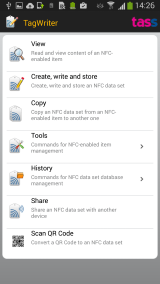

Welcome to TagWriter, which allows to you read and write NFC datasets to NFC compatible items.
Permissions description
Main menu

The main menu offers a number of choices:
- View: View the contents of an NFC tag.
This will show the message if TagWriter understands the contents,
or an indication that the content is unknown if not.
- Create: Create new content or re-use previously written or backed-up content
and write it to an NFC compatible item. With this option you can write things such as
bookmarks, telephone numbers and SMS messages
- Tools: (Standard Edition and up) Opens a submenu with some options that allow meta-operations on NFC items
- Browse history: Allows to browse through previously written and backed-up content
and to write it again. A long click on an item brings up a submenu that allows more operations
such as 'edit'
- Share: Sharing an NFC dataset allows to exchange messages between NFC devices.
If the other device supports receiving NFC datasets from another device (as opposed to a
physical item), it can receive the item by keeping it close to the current device when
an item is being shared
In the preferences you can set the 'default action' to determine what should happen when
an NFC item is detected while in the main menu. The options are View, Store and Ignore.
These allow you to go to the view screen, backup the content or ignore the detection of the item.
(Standard version and up only) There is also a preference for auto launch, which allows you to
launch the content of the item as soon as it is detected. For example, for a phone item, the dialler
is started, for a URL, the browser is started etc.